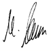

Declaration of Conformity according to directives 2004 / 108 / EG
Manufacturer’s name: MA Lighting Technology GmbH
Manufacturer’s address:
Dachdeckerstraße 16
D-97297 Waldbüttelbrunn
Germany
declares that the product
Product category: Control unit
Name of product: Video Processing Unit (VPU)
complies with the following product specifications:
Safety: EN60065, EN60950-1
EMV (EMC):
EN55103-1 (E1)
EN55103-2 (E2)
Additional information: DMX512, Ethernet, USB. Malink, DVI, LTC, Audio IN, Midi and analogue inputs must be shielded and the shielding must be connected to the earthing resp. to the housing of the corresponding plug.
Waldbüttelbrunn, September 6th 2013
Dipl. Ing. Michael Adenau
